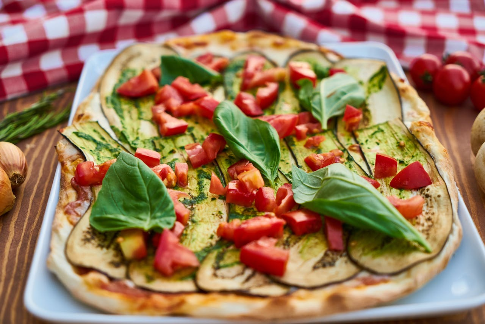

Pizza

Original Italian Pizza
Homemade pizza is a crowd-pleasing dish that brings together a crisp, chewy crust with savory sauce, melted cheese, and endless topping options. Whether you prefer a classic Margherita or a fully loaded meat-lover's pie, making pizza at home lets you control every aspect — from the dough thickness to the choice of ingredients. It is ideal for family dinners or a fun weekend cooking project.
Ingredients
- 1 pizza dough (store-bought or homemade)
- 1/2 cup pizza sauce
- 1 1/2 cups shredded mozzarella cheese
- Optional toppings: pepperoni, mushrooms, bell peppers, onions, olives, sausage
- 2 tbsp olive oil
- Flour for dusting
Steps
- Preheat oven to 475°F (245°C).
- Roll out pizza dough on a floured surface to desired thickness.
- Transfer dough to a baking sheet or pizza stone.
- Brush dough lightly with olive oil.
- Spread pizza sauce evenly over the dough.
- Sprinkle shredded mozzarella over the sauce.
- Add your desired toppings.
- Bake in preheated oven for 12 to 15 minutes, or until crust is golden and cheese is bubbly.
- Slice and serve hot.
Home